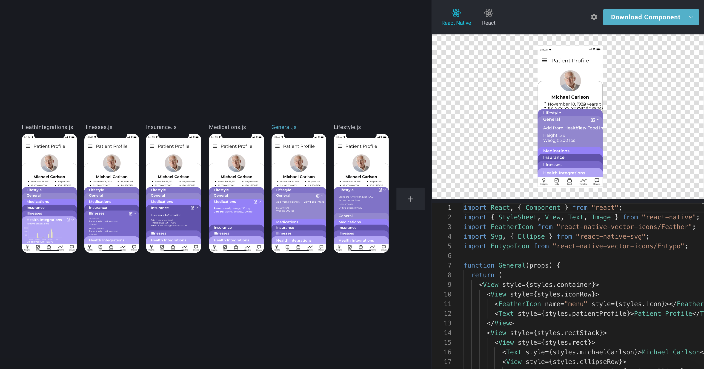

Ideation
The task is fairly straightforward and the design team was given a basic color scheme and theme concept to go
off. As a
team, we collectively thought of the essential necessities that an app like this would require. We decided that
the app
should include features such as chat, timeline/calendar, profiles, to-do lists, insights, retrospectives and
reminder
notifications, and that other features like outside resources and how-tos can be added behind a paywall. This
whole ideation process was done through constant communication and preplanned designation of tasks via slack
and notion. Each week, we used these two tools as a means to stay connected and continue good cooperation
within the team.

Wireframing
Since our timeline was so short (3 months) to create the app from start to finish, the design team had to
expedite the
wireframing process as much as possible. Because of this, we designed a high-fidelity wireframe using figma.
Team
members were split to work on different screens individually but collaborated to create a cohesive design that
matched
across the board (iconography, buttons, fonts). We went through 6 different iterations of the wireframing
process,
going
through experimentation, user testing, and manager approval, to create our final wireframe, prototype 1.6. I
specifically worked on the home, profile, and setting screens.
The home screens are the initial screens the user sees upon logging into the app, so the intention behind the
design was
to give all the urgent information that the user might need to see. The user is able to see how many tasks they
have and
a summary of their patient’s profile information, alongside a column of information, announcements, reminders,
or
tasks.
Announcements include any urgent updates on the status of their patient, any upcoming events/appointments, and
emergencies. Reminders provide notifications for recurring tasks like picking up prescriptions or routine
visits.
Tasks
provide a short summary of the upcoming tasks the user has been assigned, and is linked to the to-do list
screen.
The profile screen provides the user with all the information they can upload on the app, from contact
information to
responsibilities to crew members. From this screen the user can also look at individual crew members who they
work
with
(usually family and family friends), edit their own contact information, and edit the contact
information/responsibilities for crew members.
The settings screen in itself is extremely simple and displays the main categories that a user can
adjust and customize to their liking. After many iterations of user testing, our UX research and UX
design teams were able to collaborate and decide on the categories of General/iOS, Your Account,
Notifications, Permissions, Chat, Upgrade, and Log Out, since they are all general categories that
users all wanted to be able to adjust. Some examples are changing contact information or the members
of a user's crew, how notifications would be delivered to a mobile device, and how the chat UI would
function for each user. Here, moreso than anywhere else in the app, the iconography was integral to
delivering the right information and so we had 3 iterations of user testing with different icons from
the ionicon library to get our final outcome.

Alongside the screen designs, I was resposible for creating a thorough walkthrough of every screen in
the app and how each one linked to the next. The whole design team was also tasked with creating a
holistic style guide and design system so that both the design and software engineering teams could
keep screen elements consistent across the board.
Prototyping
After our wireframes were completed and approved by our project manager, we moved forward and continued using
Figma,
utilizing the prototype feature and animations to link screens via buttons and add animations to simulate the
app
as
accurately as possible. During the prototyping process, we also were able to start designing the sign in and
onboarding processes and their associated screens. We deided to go with an ombre effect on both to show a
distinction between these grouped screens and the rest of the app, showing how these are meant to help with
the set up and that the user has yet to access the actual content of the app.
Translating Wireframe Designs to React Native Code
After user-testing and full approval from our project manager, Suchen and I transitioned all the screen
designs
to
BuilderX, an online tool that automatically turns designs into front-end React Native code. As we rebuilt the
screens on
BuilderX, we began to also link the screens to match the prototyping and made the User Interface animations
more
flushed
out using Lottie.
